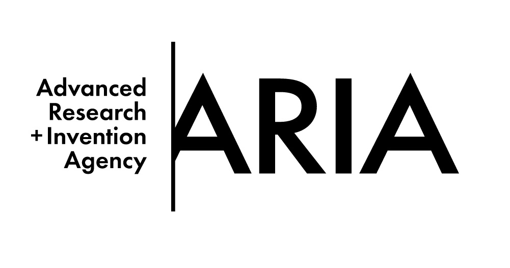

About Me
2025 – Present

2024 – 2025
2023 – 2024
2020 – 2023

2015 – 2019
Fresh out of undergrad, I faced a dilemma: a PhD, or a corporate job offer. I confidently embarked on 3 years of management consultancy and have been doing my penance ever since. I was briefly a member of Anduril's UK team, and spent a year at ARIA working on Jacques Carolan's neurotechnology programme, before finally realising that you can't do science if you're not a scientist.
Since then, I've been studying for a PhD with Prof Andrew Davison. My research is is focused on probabilistic inference in distributed systems, particularly using Gaussian Belief Propagation to make globally optimal decisions with only local knowledge. I want to make that process as efficient as possible.
Links I like: